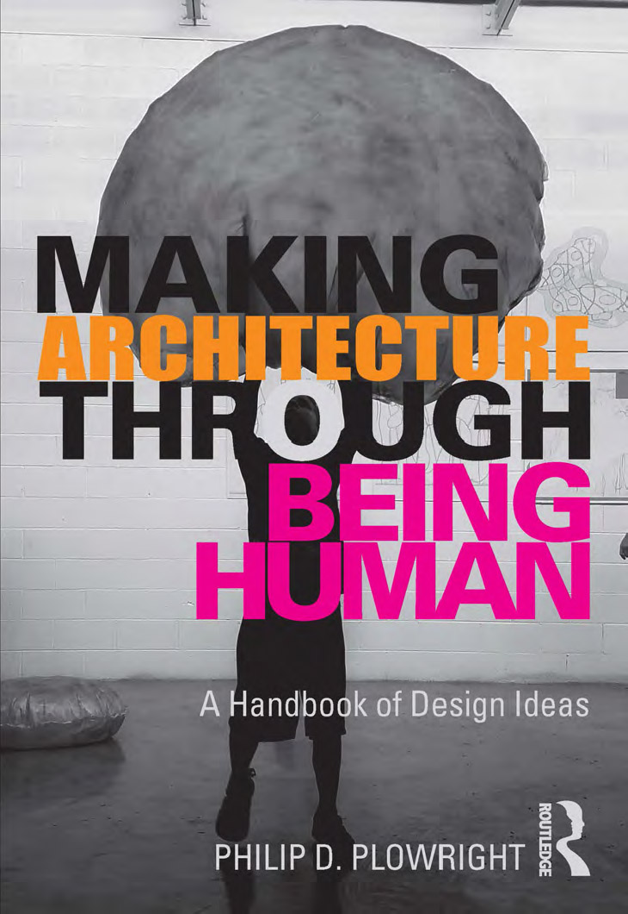
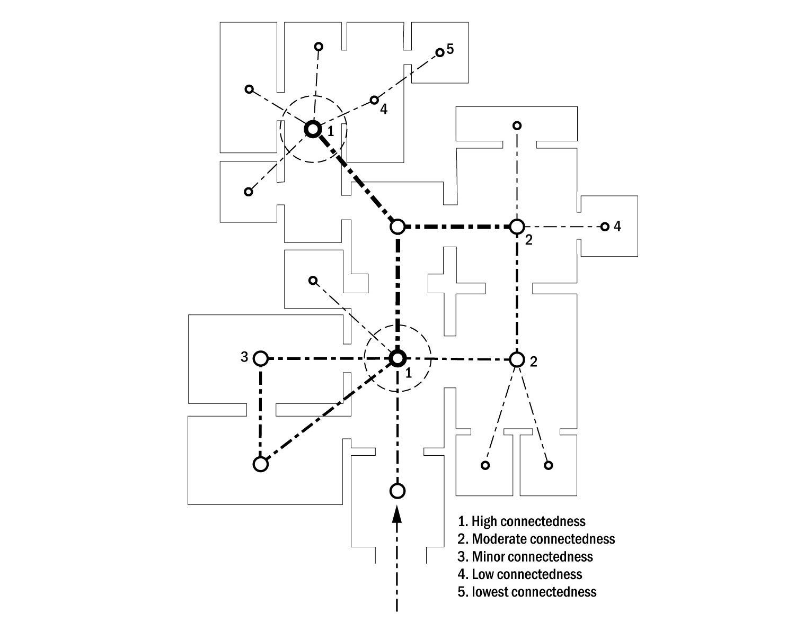
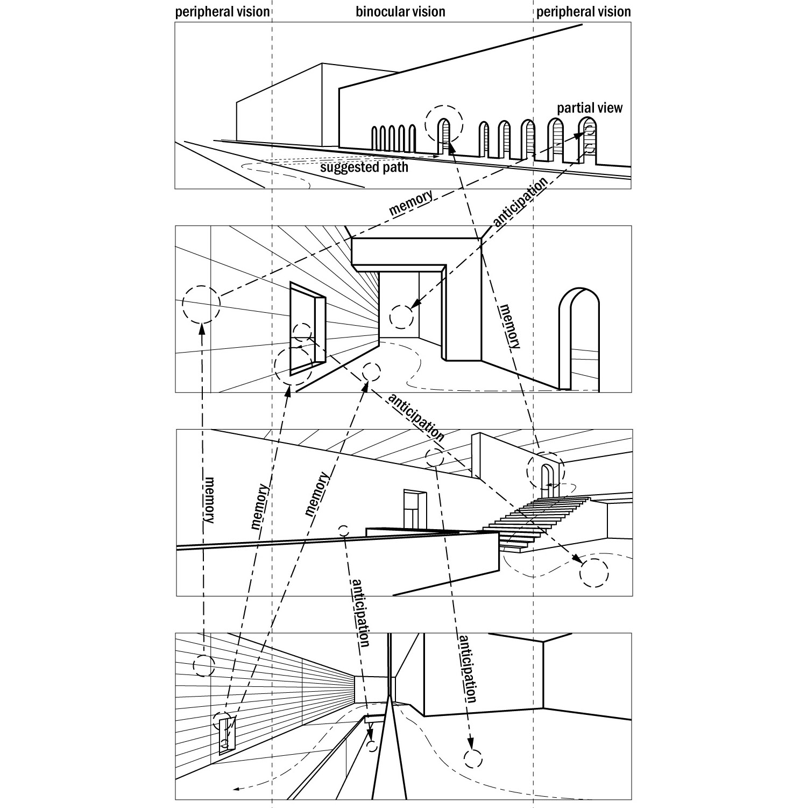
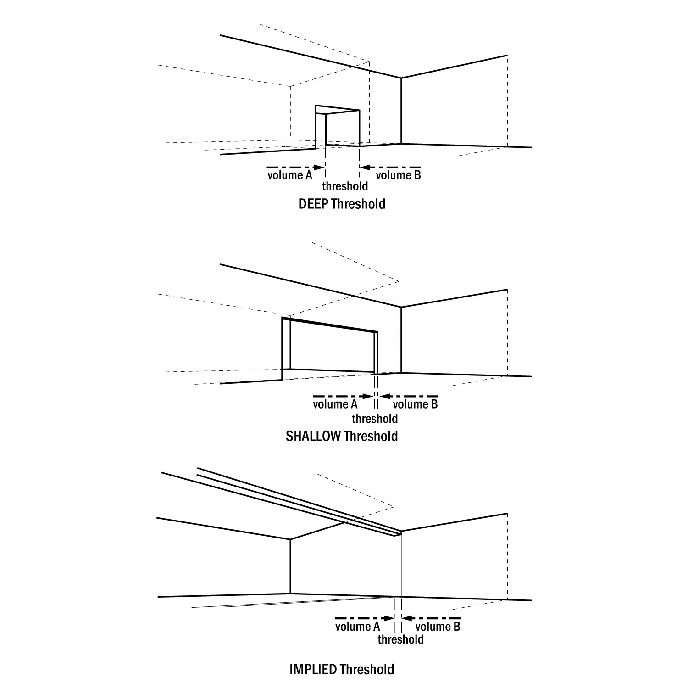
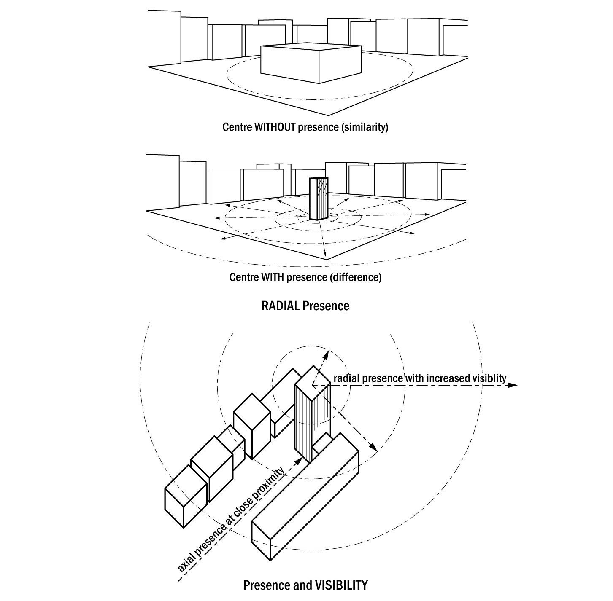
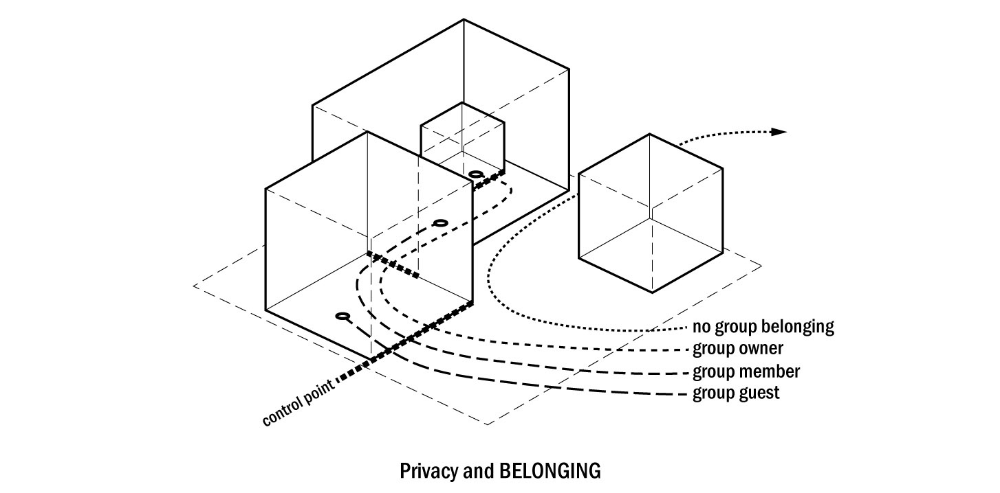

Architecture starts with the translation of embodied biological experience into social agreement before we layer on any more complex socio-cultural meaning. This studio companion book outlines the fundamental concepts (the raw biological inputs) and the assemblages (the complex chains of meaning) that designers use to create intelligible environments. Throught this, thee text serves as a 'cognitive lexicon' for design. It moves beyond the visual appreciation of architecture to examine the embodied roots of form and traces how simple learned inputs are translated into more complex scaffolding (like privacy, hierarchy, and territory). It argues that meaning in architecture is not an abstract intellectual game, but a direct projection of the human experience onto the built environment.
The biological baseline. These are not cultural choices; they are mandates of the human body.
Projection. How we map our bodily experience onto inanimate objects.

The Syntax. How simple concepts link together to form complex architectural experiences.
Architecture is not a collection of isolated terms; it is a syntax. We link simple biological concepts together to form complex social agreements. The following Assemblages map these cognitive chains.
An imaginary line that points. It organizes attention and implies a direction, often terminating at a significant object.
The activation of axis through movement. We identify a destination (goal) and the trajectory required to reach it (path).
Movement over time. A sequence of spaces with a beginning, middle, and end, creating a spatial narrative.
Choice. How many other spaces can be accessed from the path? High connectedness creates integration and social potential.
Formalized movement. When the journey is structured for ritual or social significance, establishing a hierarchy of events.

A point that gathers space around it. The location of importance and control (the "Self").
The creation of an "Inside" vs. "Outside". We project our own bodily experience of being a container onto rooms.
The depth of containment. Bounded areas within other bounded areas (nesting) increase the sense of protection and separation.
A geometry where everyone sees everyone. A space with no hidden corners, promoting social stability and gathering.
The condition of "Between". A physical volume that negotiates the transition from outside to inside.

The primary plane. Just as humans have faces, we assign a "front" to objects to determine how to interact with them.
Recognition. The abstraction of an object to its essential nature ("What is this thing?").
Projection. We attribute human agency, emotion, or posture to inanimate structures ("This building looks aggressive").
Influence. When an object is interpreted as actively projecting its values outward into the space, affecting those around it.

The prerequisite for social existence. Defining a shared "here" separate from "there".
Shared experience. Spatial configurations that support group cohesion and interaction.
Visibility. To be part of a community is to be seen. High exposure encourages discovery but reduces security.
Control. The ability to limit access. Privacy is not just isolation; it is the power to choose who enters your territory.
